4．数理逻辑的兴起
有一种发展曾在集合论公理化中引起新的争论和不满，这种发展就是关于逻辑在数学中的地位的；它起源于19世纪逻辑的数学化。这个发展有它自己的历史。
在几何论证的符号化甚至机械化中显示出来的代数的威力，感动了笛卡儿和莱布尼茨一些人（第13章第8节），他们两人设想了一种比数量的代数更宽广的科学。他们设计了一种一般的或抽象的推理科学，它行使起来将有点像通常的代数，但可应用于一切领域中的推理。如莱布尼茨在他的一篇文章中所说的，“普遍的数学就好比是想象的逻辑”应能论述“在想象范围内可精密确定的一切东西”。用这样的逻辑可建立思想的任何大厦，从它的简单元素到越趋复杂的结构。这种普遍代数将是逻辑的一部分，并且是代数化了的逻辑。笛卡儿已经谨慎地开始了去建造逻辑的一种代数；这个工作的一个未完成的草稿现在还留存着。
莱布尼茨追索着和笛卡儿相同的宽广目标，开创了一个更雄伟的方案。他一生都很注意逻辑，并且很早就神往于中世纪神学家勒尔（Raymond Lull，1235—1315）的图式。勒尔的书《最大最终的艺术》（Ars Magna et Ultima）提出了结合已有的理念去产生新理念的朴素的机械方法，但他确实有可应用于一切推理的、关于逻辑的普遍科学的概念。莱布尼茨离开了经院逻辑和勒尔，而为一种宽广演算的可能性所激动，这种演算将使人们在一切领域中能够机械地轻易地去推理。莱布尼茨对于他的普遍符号逻辑的计划说道，这样一种科学，通常的代数只是它的一小部分，它将只受到必须服从形式逻辑的规律的约束。他说，可以称它为“代数逻辑的综合”。
这种广义的科学首先需要配备一种提供适合于思维的合理的普遍语言。概念被分解成为一些原始的不相同的又不相重叠的概念，它们可以用一种几乎是机械的方式结合起来。为了防止思想失误，他还认为必须利用符号。在这里，代数符号对他思想的影响是明显的。他想得到一种能明确表示人们的思想并有助于推理的符号语言。这种符号语言正是他的“普遍的特征”。
1666年莱布尼茨写成他的《论组合的艺术》（De Arte Combinatoria）(10)，其中包括有他对于推理的普遍系统的早期计划。后来他又写过许多片段，从未发表过，但可以在他的哲学著作的版本(11)中找到。在他的最初尝试中，他把每一个原始概念配合上一个质数；由几个原始概念所组成的任一概念就表示为相应的质数的乘积。例如，如果3代表“人”而7代表“有理性的”，21就代表“有理性的人”。随后他想要把通常三段论的法则翻译成为这个样式，但没有成功。有时他还想用特殊的符号去代替质数，这时复杂的理念将表示为符号的结合。实际上莱布尼茨认为原始理念的个数很少，但这被证明是错误的。而只用合取（conjunction）这一个基本运算去结合原始理念也是不够的。
他还开始了真正逻辑代数的工作。在他的代数中，莱布尼茨已经直接间接地有了这样一些概念，即我们现在所说的逻辑加法、乘法、等同、否定和空集。他还注意到需要研究一些抽象关系，如包含、一一对应、多一对应以及等价关系等。他认识到其中有些具有对称和传递的性质。莱布尼茨没有完成这项工作；他未能超过三段论的法则，他自己也认识到这是不能包括数学所用到的全部逻辑的。莱布尼茨曾对洛必达（Guillaume F．A．l'Hospital）等人说明过他的想法，但他们未予注意。他的逻辑工作直到20世纪初都未出版，因而很少有直接的影响。在18世纪和19世纪初，有些人草拟过与莱布尼茨相似的计划，但未能比他更前进一步。
德摩根采取了一种雄心较小却较为有效的办法。德摩根发表了《形式逻辑》（Formal Logic，1847）和很多文章，其中有几篇发表在《剑桥哲学会学报》（Transactions of the Cambridge Philosophical Society）上。他想修正并改进亚里士多德的逻辑。在他的《形式逻辑》中，对亚里士多德的逻辑增加了一条新的原则。在亚里士多德的逻辑中，前提“有些M是A”和“有些M是B”是没有结论的；并且事实上，这种逻辑要求中项M必须用作全称的，即必须出现“所有的M”。但是德摩根指出，从“多数的M是A”和“多数的M是B”必定可以得出“有些A是B”。德摩根把这个事实表示成定量的形式。如果有m个M，而有a个M是A并有b个M是B，那么至少有（a＋b－m）个A是B。德摩根的意见的要点就是，词项（term）可以是定量的。从而他就能够引进更多的正确的三段论式。定量化还消去了亚里士多德逻辑中的一个缺陷。在亚里士多德的逻辑中，从“所有的A是B”可以推出的结论“有些A是B”，蕴含A的存在，但它未必存在。
德摩根还开创了关系逻辑（logic of relations）的研究。亚里士多德的逻辑主要专注于“是”的关系，并且不是肯定就是否定这个关系。德摩根指出，这种逻辑不能证明，如果马是动物，那么马尾巴是动物尾巴。它肯定不能讨论像x爱y这样的关系。德摩根引进了讨论关系的符号，但没有把这个论题进行很远。
在符号逻辑领域内，德摩根以现在所谓的德摩根法则而闻名。照他的说法(12)，一个组（aggregate）的反面（contrary）是各个组（aggregates）的反面的复合（compound）；一个复合的反面是各成分（components）的反面的组合。这些法则表示成逻辑记号便是
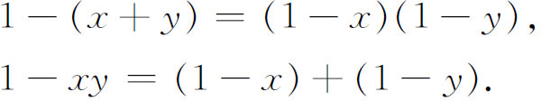
符号方法对于逻辑代数的功绩，重要的一步是布尔（1815—1864）做的，他基本上是由自学而成为科克（Cork）皇后学院的数学教授。布尔确信语言的符号化会使逻辑严密。他的《逻辑的数学分析》（Mathematical Analysis of Logic）是与德摩根的《形式逻辑》同时出版的，和他的《思维规律的研究》（An Investigation of the Laws of Thought，1854）这两本书包含着他的主要想法。
布尔的办法是着重于外延逻辑（extensional logic），即类（class）的逻辑，其中类或集合用x，y，z，…表示，而符号X，Y，Z，…则代表个体元素。用1表示万有类，用0表示空类或零类。他用xy表示两个集合的交［他称这个运算为选拔（election）］，即x与y所有共同元素的集合；他还用x＋y表示x中和y中所有元素的集合。［严格地讲，对于布尔，加法或联合只用于不相交的集合；杰文斯（W．S．Jevons，1835—1882）推广了这个概念。］至于x的补则记作1－x。更一般地，x－y是由不是y的那些x所组成的类。包含关系，即x包含在y中，他写作xy＝x。等号表示两个类的同一性。
布尔相信，头脑会立即允许我们作一些初等的推理规程，这就是逻辑的公理。例如，矛盾律，即A不能既是B又是非B，就是公理。它可表示为
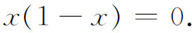
下列关系也是显然的：
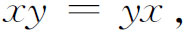
因而交的这个交换性是另一条公理，同样明显的是性质
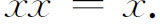
这条公理背离了通常的代数，布尔认为可作为公理的还有
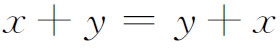
和
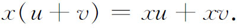
用这些公理就可把排中律说成
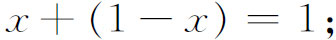
就是说，任何东西不是x就是非x。每一个X都是Y就变成x（1－y）＝0。没有X是Y可写成xy＝0；有些X是Y表示成xy≠0；而有些X不是Y表示成x（1－y）≠0。
布尔想从这些公理用公理所许可的规程去导出推理的规律。作为平凡的结论，他有1·x＝x和0·x＝0。一个稍微复杂一点的论证可说明如下。从
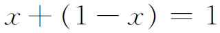
可导出
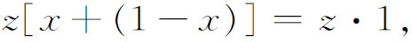
从而有
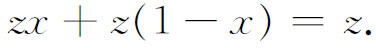
于是z这类东西就由那些在x中的，和那些在1－x中的东西所组成。
布尔看到了类的演算可以解释为命题的演算。如果x和y不是类而是命题，那么xy就是x和y的联合肯定，而x＋y就是x或y或两者的肯定。x＝1这句话的意思是命题x是真的，而x＝0是说x是假的。1－x意为x的否定。可是布尔在他的命题演算上并未进行很远。
德摩根和布尔，都可以看作是亚里士多德逻辑的改造者和逻辑代数的创始者。他们的工作的成效是建立一种逻辑科学，它从那以后便离开哲学而靠近数学。
查尔斯·皮尔斯推进了命题演算。查尔斯·皮尔斯把命题（proposition）与命题函数（propositional function）区别开来。一个命题（如约翰是人）只包含常量；一个命题函数（如x是人）包含着变量。一个命题总是真的或假的，一个命题函数却可以对变量的某些值是真的，而对其他的值是假的。查尔斯·皮尔斯还引进了两个变量的命题函数，例如x知道y。
建立符号逻辑的人们一直都对逻辑及其数学化有兴趣。由于耶拿（Jena）的数学教授弗雷格（1848—1925）的工作，数理逻辑得到一个新方向，这个方向与我们对数学基础的说明很有关系。弗雷格写了几部重要的著作，有《概念演算》（Begriffsschrift，1879）、《算术基础》（Die Grundlagen der Arithmetik，1884）和《算术的基本法则》（Grundgesetze der Arithmetik；Vol．1，1893；Vol．2，1903）。他的著作以精确和过细为特点。
在纯逻辑的领域中，弗雷格扩展了变量、量词和命题函数的运用；这个工作的大部分是他独自完成的，与他的前人（包括查尔斯·皮尔斯）无关。弗雷格在他的《概念演算》中给出了逻辑的公理基础。他引进了很多区别，在后来是很重要的，例如一个命题的叙述与肯定它是真的这中间的区别。用符号
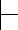
放在命题的前面表示肯定，他还把一个东西x与只包含x的集合｛x｝，以及一个东西属于一个集合与一个集合包含在另一个中，都加以区别。像查尔斯·皮尔斯那样，他用了变量和命题函数，他还指明了他的命题函数的定量化，也就是使它们成为真的那个变量或那些变量的区域。他还引进了（1879）实性蕴涵（material implication）的概念：A蕴涵B的意思是或者A真B也真，或者A假而B真，或者A假B也假。蕴涵的这种解释，对于数理逻辑更为合适。弗雷格也研究了关系逻辑；例如，a大于b所说的顺序关系，在他的工作中就是重要的。弗雷格一经把逻辑建立在明确的公理上，就在他的《算术基础》中通向他的真正目标，作为逻辑的展延去建立数学。他把算术概念表示成为逻辑概念。这样，数的定义和规律就从逻辑前提被推导出来。我们将联系罗素和怀特海的工作来考察这种构造。不幸，弗雷格的符号对数学家说来是太复杂而又生疏。他的工作直到被罗素发现以前，实际上人们都不大知道。很有风趣的是，正当《算术的基本法则》第二卷要付印的时候，他接到罗素的一封信，罗素把集合论的悖论告诉了他。弗雷格便在第二卷的结尾（第253页）说：“一个科学家不会碰到比这更难堪的事情了，即在工作完成的时候它的基础垮掉了。当这部著作只等付印的时候，罗素先生的一封信就使我处于这种境地。”